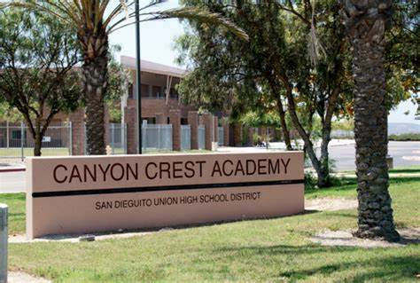

During the first school year (2004–05) at CCA, only first-year students were admitted into the student body, with a new class being added with each subsequent year. As a result, a complete student body did not exist on campus until the fourth year of instruction (2007–08), when the first class were in their final year. During the first school year, the students were instructed in portable trailers located in the school's parking lot. All facilities were open and construction of the original buildings was completed by the end of the second school year (2005–06). The overall cost of building the campus amounted to $103 million. Until 2014, a lottery was held to determine admission to the school, as the number of students who wished to attend exceeded the school's maximum enrollment. However, as of 2014, the lottery is no longer held and all students in the district who wish to attend can do so. A new building, the B building, was added in early 2016, and was opened by August 2017, to alleviate the capacity issues. The first group of students chose the raven as the school's mascot.
 CA follows a semester class schedule instead of a traditional year-based schedule, which means that students can complete eight classes in a year (four in the fall term and four in the spring term), rather than six year-long courses. The current student to teacher ratio is roughly 34:1. CCA's science department formerly ran QUEST, a program designed to allow students to learn science as it is applicable in the real world and conduct independent research. Students in the program progressed through three tiers: Research Methods, Applied Sciences, and Internship. For the 2023 school year, QUEST was replaced with the biotech program. An analogous program to QUEST, the Advanced Engineering and Technology class, provides opportunities primarily focused on STEM areas of research. Organic chemistry, including mechanisms, reactions, and biochemistry was started in the 2017-18 school year for the fall term. As of the 2019-2020 school year, biochemistry was removed from the course curriculum. CCA offers an arts and technology program called Envision. Should they choose to participate, students can specialize in Digital/Fine Arts, Theater, Cinema, Dance, Vocal Music, Instrumental Music, or Humanities. The program regularly sponsors shows and performances, and interacts with art professionals and teachers. Students have the option of taking classes from MiraCosta Community College on the CCA campus, available after school.
CCA is a member of the Avocado West league in San Diego, along with Torrey Pines High School, La Costa Canyon High School, Carlsbad High School, San Dieguito Academy, and Sage Creek High School. The mascot of Canyon Crest Academy is the raven. Canyon Crest Academy Stadium is a multi-purpose stadium located on the school's campus. Fall sports include Boys Water Polo, Girls Golf, Girls Tennis, Girls Volleyball, Cross Country, and Girls Field Hockey; winter sports include Boys Basketball, Boys Soccer, Girls Basketball, Girls Soccer, Girls Water Polo, and Wrestling, and spring sports include Badminton, Boys Golf, Boys Lacrosse, Boys Tennis, Boys Volleyball, Girls Lacrosse, Baseball, Softball, Swimming, Track & Field, and Beach Volleyball CCA does not have a football team or cheerleading squad; the founders of the school did not believe that the culture associated with high school football and cheerleading would be healthy for the students.